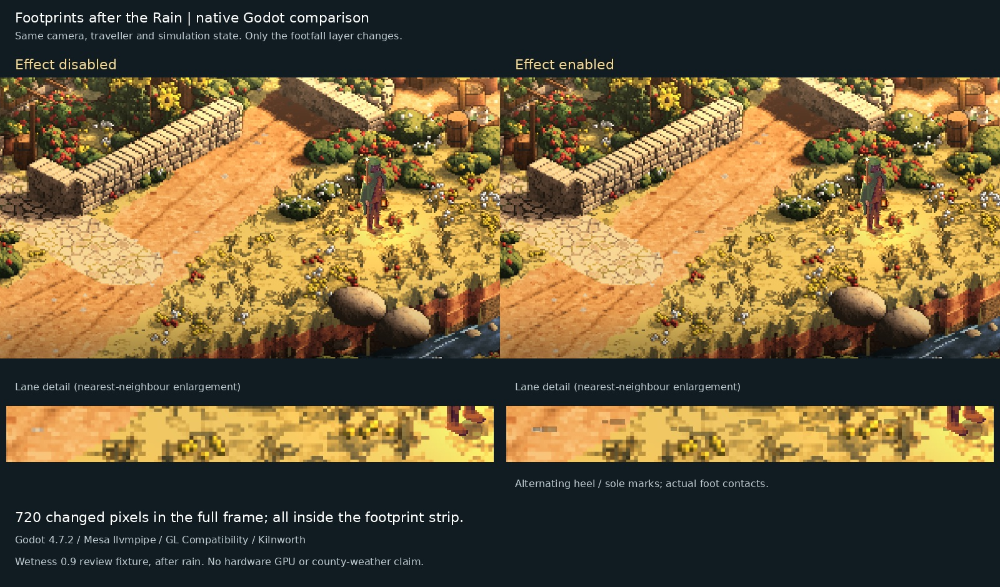

Footprints after the Rain
Wet lanes now answer the traveller's steps. Footprints after the Rain is implemented in Sprawl's playable towns: alternating bootprints, a small splash as a foot lands, and a trail that fades behind you. The feature is ready for visual review.
Before: weather needed a traveller
The rain and lantern had given the old lanes a new mood. The missing connection was underfoot. A traveller could walk through that weather without leaving any sign of having been there.
The plan was to join the rain to the actual walking animation. Every accepted foot contact would leave a quiet heel and sole on wet outdoor ground. A short scatter of water would mark the landing, then settle. Standing against a wall would leave nothing. Covered rooms would stay dry.
During: make the ground answer honestly
The walking system already measures the distance the player really travels. That became the source of the marks, so the trail follows footsteps rather than a timer. The feet alternate, including steps that cross dry ground or disappear inside.
Each print stays where it was made as the camera moves. It shares the live town surface, letting a wall or roof hide it and stopping a footprint appearing on a different floor. The heel and sole are separate small shapes, with a brief splash around a fresh contact. Reduced motion keeps the quiet prints and removes that splash.
There is room for forty-eight marks. Older ones are replaced, and each print fades away after nine seconds of simulation time. Walking for an hour cannot keep adding memory. The ground itself never needs to be repainted to leave a trail.
The first walkthrough also needed work. It carried the traveller past the comparison camera, and an indoor click was too short to prove a step. The final review uses actual walking keys, a real doorway and supported movement inside. The comparison freezes the same traveller and scene, switching only the footprint layer off and on.

After: a small trace, properly checked
The final native walkthrough passes. Wet walking leaves marks; standing still, dry ground and covered indoor movement do not. The effect follows a replacement view when the camera zooms, and native surface tests reject roofs, walls, missing scenery and the wrong ground height.
The matched pictures change only in the footprint strip. There are no changes to the traveller or town between them. A separate engine check confirms that reduced motion removes splash geometry while retaining the soles.
The full forty-eight-mark drawing test took about a third of a millisecond to submit on the software renderer used for this review. That is a bounded fixture measurement, not a promise about every graphics card. The broad test suite also reached missing art fixtures in the prepared checkout, so this feature does not carry a claim that every test in the game passed.
This is the playable town's wet-footfall feature. County weather, animal tracks, lasting footprints and deforming mud are still separate work. For now, the reward is close to the player: walk out after the rain, look behind you, and the road remembers for a little while.